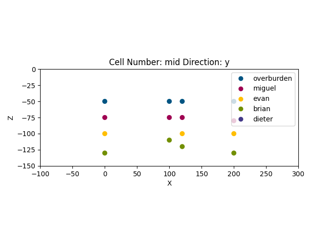
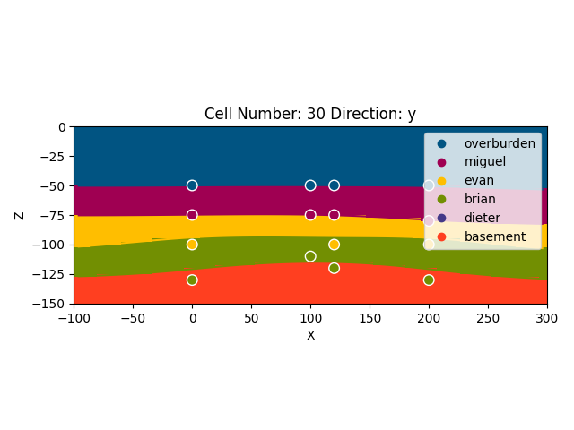
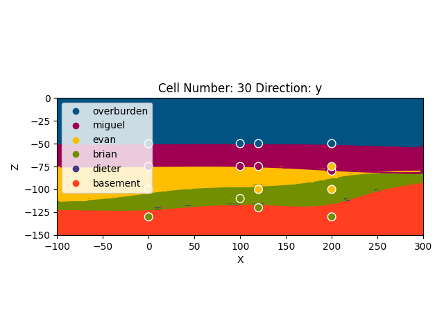
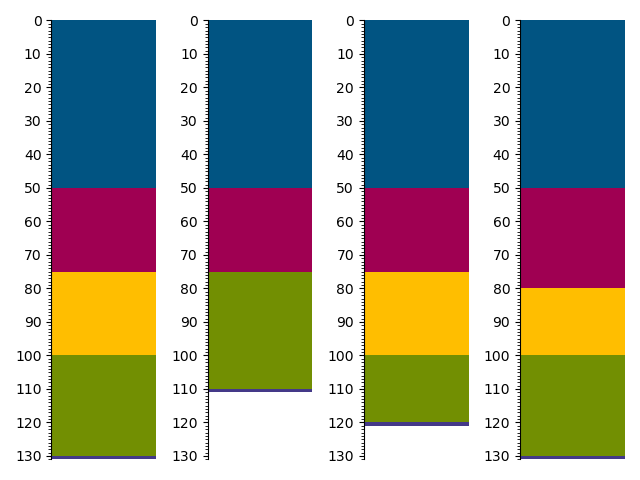
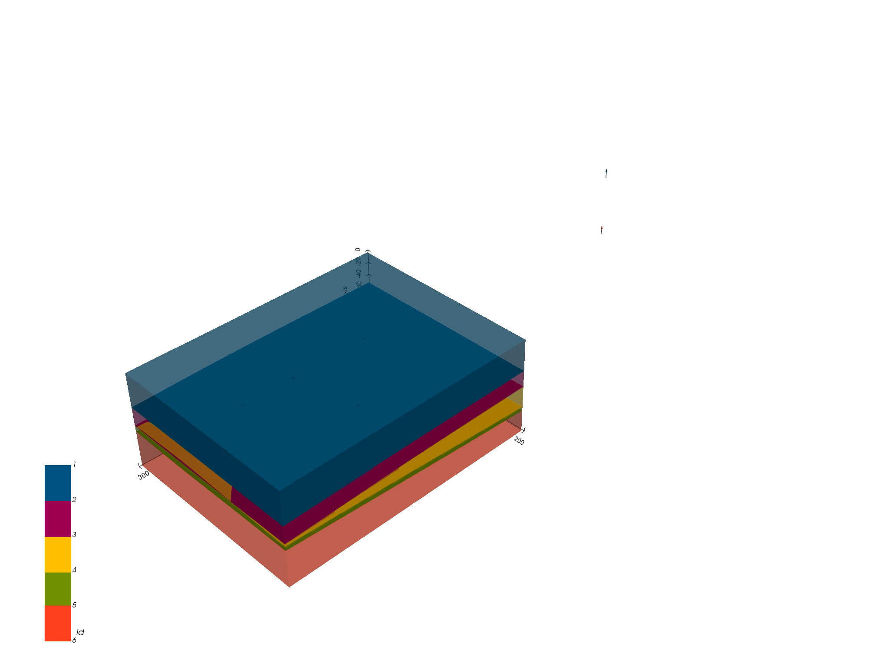

Note
Click here to download the full example code
Transform 2019: Integrating Striplog and GemPy¶
! pip install welly striplog
Authors: M. de la Varga, Evan Bianco, Brian Burnham and Dieter Werthmüller Importing GemPy
import gempy as gp
# Importing auxiliary libraries
import numpy as np
import pandas as pn
import matplotlib.pyplot as plt
import os
import welly
from welly import Location, Project
import glob
from striplog import Striplog, Legend, Decor
pn.set_option('precision', 2)
Creating striplog object¶
get well header coordinates
well_heads = {'alpha': {'kb_coords': (0, 0, 0)},
'beta': {'kb_coords': (10, 10, 0)},
'gamma': {'kb_coords': (12, 0, 0)},
'epsilon': {'kb_coords': (20, 0, 0)}}
Reading tops file
Out:
/WorkSSD/PythonProjects/gempy/examples/integrations/../data/input_data/striplog_integration/*.tops
['/WorkSSD/PythonProjects/gempy/examples/integrations/../data/input_data/striplog_integration/alpha_strip.tops', '/WorkSSD/PythonProjects/gempy/examples/integrations/../data/input_data/striplog_integration/beta_strip.tops', '/WorkSSD/PythonProjects/gempy/examples/integrations/../data/input_data/striplog_integration/epsilon_strip.tops', '/WorkSSD/PythonProjects/gempy/examples/integrations/../data/input_data/striplog_integration/gamma_strip.tops']
Creating striplog object
my_striplogs = []
for file in topsfiles:
with open(file) as f:
text = f.read()
striplog = Striplog.from_csv(text=text)
my_striplogs.append(striplog)
striplog_dict = {'alpha': my_striplogs[1],
'beta': my_striplogs[2],
'gamma': my_striplogs[3],
'epsilon': my_striplogs[0]}
striplog_dict['alpha'][0]
Plot striplog
f, a = plt.subplots(ncols=4, sharey=True)
for e, log in enumerate(striplog_dict.items()):
log[1].plot(ax=a[e], legend=None)
f.tight_layout()
plt.show()
Striplog to pandas df of bottoms
rows = []
for wellname in striplog_dict.keys():
for i, interval in enumerate(striplog_dict[wellname]):
surface_name = interval.primary.lith
surface_base = interval.base.middle
x, y = well_heads[wellname]['kb_coords'][:-1]
series = 1
rows.append([x, y, surface_base, surface_name, series, wellname])
column_names = ['X', 'Y', 'Z', 'surface', 'series', 'wellname']
df = pn.DataFrame(rows, columns=column_names)
df
GemPy model¶
Create gempy model object
geo_model = gp.create_model('welly_integration')
extent = [-100, 300, -100, 200, -150, 0]
res = [60, 60, 60]
# Initializting model using the striplog df
gp.init_data(geo_model, extent, res, surface_points_df=df)
Out:
Active grids: ['regular']
welly_integration 2021-04-18 11:39
dec_list = []
for e, i in enumerate(striplog_dict['alpha']):
dec_list.append(Decor({'_colour': geo_model.surfaces.df.loc[e, 'color'],
'width': None,
'component': i.primary,
'hatch': None}))
welly plot with gempy colors Create Decor list
dec_list = []
for e, i in enumerate(striplog_dict['alpha']):
dec_list.append(Decor({'_colour': geo_model.surfaces.df.loc[e, 'color'],
'width': None,
'component': i.primary,
'hatch': None}))
# Create legend
legend = Legend(dec_list)
legend
Plot striplogs:
f, a = plt.subplots(ncols=4, sharey=True)
for e, log in enumerate(striplog_dict.items()):
log[1].plot(ax=a[e], legend=legend)
f.tight_layout()
plt.show()
Modifying the coordinates to make more sense
geo_model.surface_points.df[['X', 'Y']] = geo_model.surface_points.df[['X', 'Y']] * 10
geo_model.surface_points.df['Z'] *= -1
Delete points of the basement surface since we are intepolating bottoms (that surface wont exit).
Out:
True
Adding an arbitrary orientation. Remember gempy need an orientation per series

Out:
<gempy.plot.visualization_2d.Plot2D object at 0x7fcc3707c0a0>
gp.set_interpolator(geo_model)
Out:
Setting kriging parameters to their default values.
Compiling theano function...
Level of Optimization: fast_compile
Device: cpu
Precision: float64
Number of faults: 0
Compilation Done!
Kriging values:
values
range 522.02
$C_o$ 6488.1
drift equations [3]
<gempy.core.interpolator.InterpolatorModel object at 0x7fcc46e8d8b0>
Out:
Lithology ids
[5. 5. 5. ... 1. 1. 1.]
p2d = gp.plot_2d(geo_model, cell_number=[30], show_data=True, show=True)
Out:
<gempy.plot.vista.GemPyToVista object at 0x7fcc467e8970>
Pinch out model¶
As we can see the 3D model generated above does not honor the forth well lets fix it. First lets add an unconformity: between the yellow and green layer:
geo_model.add_features('Unconformity')
Now we set the green layer in the second series
geo_model.map_stack_to_surfaces({'Uncomformity': ['brian', 'evan', 'dieter']})
geo_model.add_surfaces('basement')
Lastly we need to add a dummy orientation to the new series:
geo_model.add_orientations(-500, 0, -100, 'dieter', [0, 0, 1])
Now we can compute:
Out:
Lithology ids
[6. 6. 6. ... 1. 1. 1.]
p = gp.plot_2d(geo_model, cell_number=[30], show_data=True)
f, a = plt.subplots(ncols=4, sharey=True)
for e, log in enumerate(striplog_dict.items()):
log[1].plot(ax=a[e], legend=legend)
f.tight_layout()
plt.show()
- 

Getting better but not quite there yet. Since the yellow does not show up in the last well the pinch out has to happen somewhere before so lets add an artifial point to get that shape:
geo_model.add_surface_points(200, 0, -75, 'evan');
gp.compute_model(geo_model)
p = gp.plot_2d(geo_model, cell_number=[30], show_data=True)
f, a = plt.subplots(ncols=4, sharey=True)
for e, log in enumerate(striplog_dict.items()):
log[1].plot(ax=a[e], legend=legend)
f.tight_layout()
plt.show()
- 
- 
sphinx_gallery_thumbnail_number = 7
Out:
<gempy.plot.vista.GemPyToVista object at 0x7fcc6bbb8190>
gp.save_model(geo_model)
Total running time of the script: ( 0 minutes 12.397 seconds)